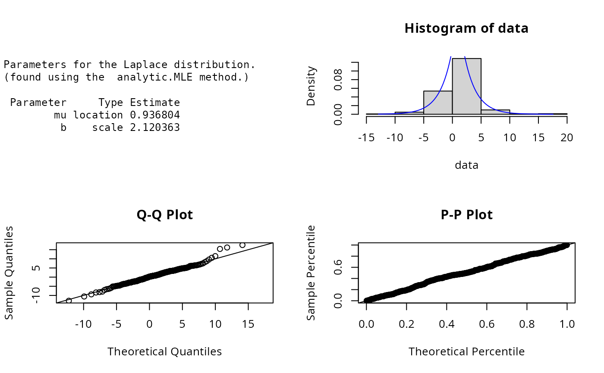

Laplace.RdDensity, distribution, quantile, random number generation
and parameter estimation functions for the Laplace distribution with location parameter \(\mu\) and
scale parameter \(b\). Parameter estimation can for the Laplace distribution can be carried out numerically
or analytically but may only be based on an unweighted i.i.d. sample.
dLaplace(x, mu = 0, b = 1, params = list(mu, b), ...)
pLaplace(q, mu = 0, b = 1, params = list(mu, b), ...)
qLaplace(p, mu = 0, b = 1, params = list(mu, b), ...)
rLaplace(n, mu = 0, b = 1, params = list(mu, b), ...)
eLaplace(X, w, method = c("analytic.MLE", "numerical.MLE"), ...)
lLaplace(x, w = 1, mu = 0, b = 1, params = list(mu, b), logL = TRUE, ...)| x, q | A vector of quantiles. |
|---|---|
| mu | Location parameter. |
| b | Scale parameter. |
| params | A list that includes all named parameters |
| ... | Additional parameters. |
| p | A vector of probabilities. |
| n | Number of observations. |
| X | Sample observations. |
| w | Optional vector of sample weights. |
| method | Parameter estimation method. |
| logL | logical; if TRUE, lLaplace gives the log-likelihood, otherwise the likelihood is given. |
dLaplace gives the density, pLaplace the distribution function, qLaplace the quantile function, rLaplace generates random deviates, and eLaplace estimates the distribution parameters. lLaplace provides the log-likelihood function, sLaplace the score function, and iLaplace the observed information matrix.
The dLaplace(), pLaplace(), qLaplace(),and rLaplace() functions allow for the parameters to be declared not only as
individual numerical values, but also as a list so parameter estimation can be carried out.
The Laplace distribution with parameters location = \(\mu\) and scale=\(b\) has probability density
function
$$f(x) = (1/2b) exp(-|x-\mu|/b)$$
where \(-\infty < x < \infty\) and \(b > 0\). The cumulative distribution function for pLaplace is defined
by Johnson et.al (p.166).
Parameter estimation can be carried out analytically via maximum likelihood estimation, see Johnson et.al (p.172). Where the population
mean, \(\mu\), is estimated using the sample median and \(b\) by the mean of \(|x-b|\).
Johnson et.al (p.172) also provides the log-likelihood function for the Laplace distribution
$$l(\mu, b | x) = -n ln(2b) - b^{-1} \sum |xi-\mu|.$$
The estimation of the population mean is done using the median of the sample. Unweighted samples are not yet catered for in the eLaplace() function.
Johnson, N. L., Kotz, S. and Balakrishnan, N. (1995) Continuous Univariate Distributions,
volume 2, chapter 24, Wiley, New York.
Best, D.J., Rayner, J.C.W. and Thas O. (2008) Comparison of some tests of fit for the Laplace distribution,
Computational Statistics and Data Analysis, Vol. 52, pp.5338-5343.
Gumbel, E.J., Mustafi, C.K., 1967. Some analytical properties of bivariate extremal distributions.
J. Am. Stat. Assoc. 62, 569-588
ExtDist for other standard distributions.
A. Jonathan R. Godfrey and Haizhen Wu.
Updates and bug fixes by Sarah Pirikahu
# Parameter estimation for a distribution with known shape parameters
X <- rLaplace(n=500, mu=1, b=2)
est.par <- eLaplace(X, method="analytic.MLE"); est.par
#>
#> Parameters for the Laplace distribution.
#> (found using the analytic.MLE method.)
#>
#> Parameter Type Estimate
#> mu location 0.936804
#> b scale 2.120363
#>
#>
plot(est.par)

# Fitted density curve and histogram
den.x <- seq(min(X),max(X),length=100)
den.y <- dLaplace(den.x, location = est.par$location, scale= est.par$scale)
hist(X, breaks=10, probability=TRUE, ylim = c(0,1.1*max(den.y)))
lines(den.x, den.y, col="blue")
lines(density(X), lty=2)
# Extracting location or scale parameters
est.par[attributes(est.par)$par.type=="location"]
#> $mu
#> [1] 0.936804
#>
est.par[attributes(est.par)$par.type=="scale"]
#> $b
#> [1] 2.120363
#>
# Parameter estimation for a distribution with unknown shape parameters
# Example from Best et.al (2008). Original source of flood data from Gumbel & Mustafi.
# Parameter estimates as given by Best et.al mu=10.13 and b=3.36
flood <- c(1.96, 1.96, 3.60, 3.80, 4.79, 5.66, 5.76, 5.78, 6.27, 6.30, 6.76, 7.65, 7.84, 7.99,
8.51, 9.18, 10.13, 10.24, 10.25, 10.43, 11.45, 11.48, 11.75, 11.81, 12.34, 12.78, 13.06,
13.29, 13.98, 14.18, 14.40, 16.22, 17.06)
est.par <- eLaplace(flood, method="numerical.MLE"); est.par
#>
#> Parameters for the Laplace distribution.
#> (found using the numerical.MLE method.)
#>
#> Parameter Type Estimate S.E.
#> mu location 10.13000 0.4149289
#> b scale 3.36091 0.5850647
#>
#>
plot(est.par)
#log-likelihood function
lLaplace(flood,param=est.par)
#> [1] -95.87684
# Evaluating the precision by the Hessian matrix
H <- attributes(est.par)$nll.hessian
var <- solve(H)
se <- sqrt(diag(var));se
#> mu b
#> 0.4149289 0.5850647